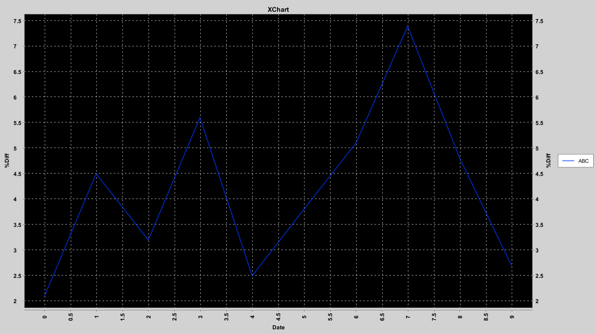

Built with openjdk version "11" 2018-09-25, xchart 3.6.5, Windows 10
XChart source code
Summary of data in the array lists:
/*
x.add(sdf.parse("2020-10-19")); //dates on X
x.add(sdf.parse("2020-10-20"));
x.add(sdf.parse("2020-10-21"));
x.add(sdf.parse("2020-10-22"));
x.add(sdf.parse("2020-10-23"));
x.add(sdf.parse("2020-10-24"));
x.add(sdf.parse("2020-10-25"));
x.add(sdf.parse("2020-10-26"));
x.add(sdf.parse("2020-10-27"));
x.add(sdf.parse("2020-10-28"));
*/
x.add(0); //ints on X
x.add(1);
x.add(2);
x.add(3);
x.add(4);
x.add(5);
x.add(6);
x.add(7);
x.add(8);
x.add(9);
y.add(2.1);
y.add(4.5);
y.add(3.2);
y.add(5.6);
y.add(2.5);
y.add(3.8);
y.add(5.1);
y.add(7.4);
y.add(4.8);
y.add(2.7);
Plot of integers on X-axis is correct, the plot starts on 0 and ends with 9.

Plot of dates on X-axis is incorrect. The plot starts at 10-18 and finishes on 10-27
but the x-list starts with 10-19 and ends with 10-28.